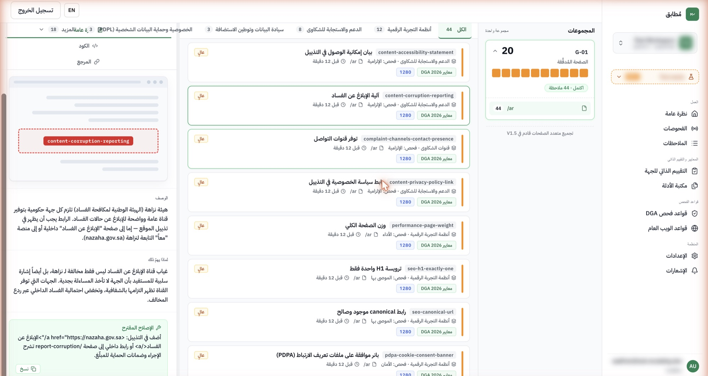
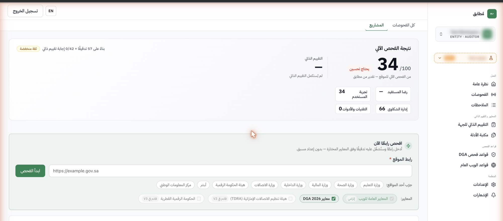
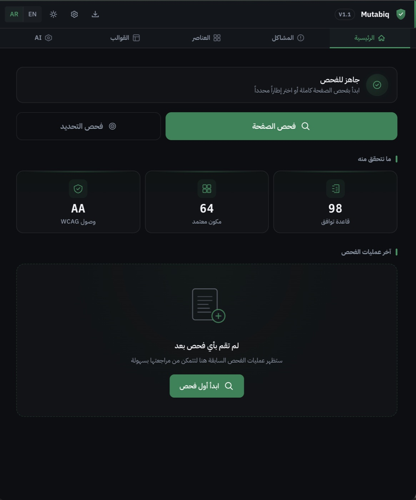
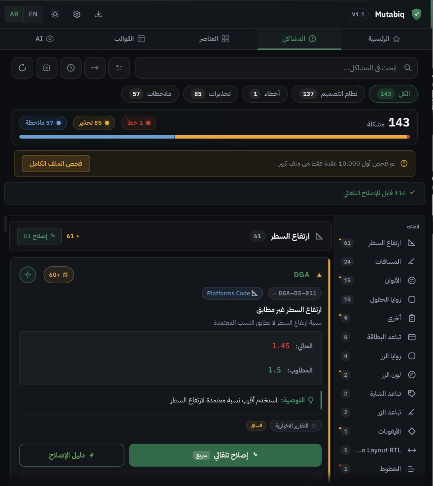

ثلاث بوابات… منظومة واحدة
رحلات الاستخدام مرسومةً شاشة بشاشة — الهيئة، والجهات، والتصميم
عرض مرافق — هيئة الحكومة الرقمية
مُطابق · أغسطس 2026
إعداد وتقديم: آية أحمد
قبل أن نبدأ — بريف
ما هو مُطابق؟
منصة تحوّل معايير هيئة الحكومة الرقمية إلى نظام حي — يقيس آليًا، ويرشد إلى الإصلاح، وينظّم الأدلة باستمرار:
المدخل — معاييركم كما هي
89معيارًا — الإصدار الخامس V5.0كما نشرته الهيئة حرفيًا
قواعد مُسندة لمعيارها
استبيان وأدلة لما لا يُقاس آليًا
المخرج — قرار قابل للتنفيذ
الوضع الراهن — كما هو رسميًا
كيف تقيس الهيئة اليوم؟
عبر «المعايير الأساسية للتحول الرقمي» — 89 معيارًا في الإصدار الخامس — بدورة سنوية على نظام «قياس»:
وتكتمل الصورة بأداتين رسميتين أخريين: مؤشر نضج التجربة الرقمية DXMI، ومؤشر كفاءة المواقع الإلكترونية والمحتوى الرقمي — لكل منهما نطاقه ومنهجيته.
مصادرنا — وثائقكم أنفسها
قرأناها وثيقةً وثيقة… وهكذا تحوّلت إلى نظام
تفاعلي — النقر على أي وثيقة يعرض أبرز ما التقطناه منها| الوثيقة | ما فهمناه منها | أين تعيش في مُطابق |
|---|---|---|
| وثيقة المعايير الأساسية للتحول الرقميV5.0 · 155 صفحة | الإطار كاملًا: 10 منظورات × 24 محورًا × 89 معيارًا بمتطلباتها — ومنهجية التقدير: كلي / جزئي / عدم التزام | الكتالوج الحي بنصوصه الحرفية وسجل إصداراته + تصنيف طريقة التحقق + 128 قاعدة فحص مُسندة |
| الدليل التعريفي لمؤشر كفاءة المواقع الإلكترونية والمحتوى الرقميV2.0 · 19 صفحة | منظوران × 11 محورًا — الكفاءة التقنية (6 محاور) تُقاس بأدوات آلية، وتجربة المحتوى (5) بتصفح خبير | هذا الدليل يرسم «خط الأتمتة» — ومحرك الفحص عندنا يقيس آليًا ما رسمه آليًا |
| الدليل الاسترشادي للمحتوى الرقمي للمواقع الحكوميةV1.0 · 41 صفحة | إرشادات جودة المحتوى الرقمي الحكومي: اللغة، والبنية، وحداثة المحتوى | حزمة قواعد جودة المحتوى داخل محرك الفحص |
من القراءة إلى المعمارية
ماذا فهمنا — وكيف صاغ الفهمُ النظام
الهيئة تقيس آليًا منظورًا واحدًا فقط: «كفاءة المواقع وجودة المحتوى الرقمي»
لا توجد أوزان منشورة إطلاقًا — والتقدير الرسمي على مستوى المعيار: كلي / جزئي / عدم التزام
أغلب الإطار طبيعته مستندية — 62 معيارًا بتصنيف الكتالوج تُثبَت بالوثائق والأدلة، لا بالفحص
ثلاث أدوات رسمية منفصلة — لكل منها نطاقها ومنهجيتها، ورقم الوثيقة لا يحدد هويتها
المنهجيات نفسها تتطور بين دورة وأخرى — والوثيقة الواحدة لها أجيال
الفجوة — التي نعود لحلّها
القياس سنوي… والمواقع تتغير كل يوم
بين دورة القياس والدورة التي تليها، تتغير المواقع والمنصات الحكومية آلاف المرات — وفي هذه المسافة تعيش الفجوة:
خريطة الرحلة
منظومة واحدة تُفتح من ثلاث بوابات
سنعبر البوابات بالترتيب — الهيئة، ثم الجهة الحكومية، ثم التصميم — ونختم بتتبع ملاحظة واحدة وهي تمر بها جميعًا. كل خطوة مرسومة كشاشة توضيحية تخطيطية؛ والمنصة الحقيقية تُعرض مباشرة عند الطلب.
تفاعلي — النقر على أي بوابة ينتقل إلى رحلتها مباشرةالبوابة الأولى — الهيئة
الإشراف
رؤية شاملة لالتزام الجهات، وحملات فحص، ومتابعة موثقة حتى الإغلاق.
البوابة الثانية — الجهة الحكومية
الجاهزية
فحص مستمر، وملاحظات قابلة للتنفيذ، وملف قياس يكتمل قبل الدورة الرسمية.
البوابة الثالثة — التصميم
الوقاية
مُطابق لفيجما يفحص التصميم قبل أول سطر كود — فيمنع الملاحظة قبل أن تولد.
هيكلة الحل
ثلاث بوابات… على نواة واحدة وأساس واحد
تفاعلي — النقر على أي بوابة ينتقل إلى رحلتهامُطابق للمراجعين
بوابة الهيئة — الإشراف
تستخدمها فرق المراجعة والإشراف في الهيئة — إطلاق الحملات، اعتماد الملاحظات، والتحقق من المعالجات
مُطابق للجهات
بوابة الجهة — الجاهزية
تستخدمها فرق التحول الرقمي والالتزام في الجهة — استقبال الملاحظات، الاستبيان والأدلة، ومتابعة المعالجة
مُطابق لفيجما
بوابة التصميم — الوقاية
تستخدمها فرق تصميم المنصات الحكومية — وفرق المراجعة حين يُشارَك معها التصميم — لفحصه قبل أن يتحول إلى موقع أصلًا
النواة المشتركة — تُبنى مرة، وتخدم الجميع
قبل الحكاية — الواقع
المحرك الآلي يعمل اليوم فعلًا — لا تصورًا
الفحص يجري على مواقع حكومية حقيقية، والأرقام أدناه مقروءة من قاعدة بيانات المنصة مباشرة. وبوابتا الهيئة والجهة مبنيتان وتعملان تقنيًا — أمّا مسارا التقييم الذاتي والمعالجة الموزعة فمبنيّان ولم تُشغّلهما جهةٌ بعد، وهذا تحديدًا ما نطلب البرنامج التجريبي لإثباته:
3,571
فحصًا مكتملًا
147,966
ملاحظة مرصودة
130
جهة في الكتالوج المرجعي
89
معيارًا — V5.0
128
قاعدة فحص آلية
الأرقام مقروءة من قاعدة بيانات المنصة مباشرة بتاريخ إعداد العرض — لا تقديرات ولا أرقام تسويقية.
والفحص خارجيٌّ يقرأ الصفحات العامة فقط — كما يقرؤها أي متصفح — بحدود مهذبة؛ والنتائج التفصيلية لأي جهة لا تُعرض إلا بحضورها أو بإذنها.
داخل المحرك — بالاسم والعدد
ماذا يقيس الفاحص الآلي؟ هذه المعايير الـ17 — بأسمائها
خمسة معايير تحمل وحدها 99 قاعدة من أصل 128 — وهذه هي:
تفاعلي — النقر على أي معيار أو مجموعة يعرض متطلباته الرسمية وفحوصاتنا عليهداخل مسار الأدلة — بالاسم أيضًا
وماذا يُدار بالاستبيان والملفات من الجهة؟
طبيعة المعايير الـ89 كما يصنفها الكتالوج — من قاعدة البيانات مباشرة:
تفاعلي — النقر على أي شريحة يعرض معايير الفئة بأسمائهاماذا تطلب المعايير المستندية؟ (62 معيارًا)
في الإستراتيجية والحوكمة والعمليات والمخاطر والابتكار: سياسات وخطط معتمدة · محاضر لجان وقرارات · تقارير متابعة وقياس · اتفاقيات ومستندات تشغيلية — لا يستطيع فاحص آلي إثباتها، وادعاء ذلك خداع.
وكيف ينظمها مُطابق؟
استبيان منظم على المعيار نفسه ← رفع الملف مربوطًا بمعياره ← مراجعة (وللمفتش أن يجيب نيابةً بسجل) ← ملف قياس مكتمل قبل الدورة الرسمية. والمعايير المختلطة (18) تُعرض بطاقتها بالوجهين: ما قاسته الآلة وما أثبته المستند.
البوابة الأولى · الإشراف
الهيئة: الرقابة كلها من شاشة واحدة
من داخل المنصة — لقطة حية، لا تصميم
هكذا تبدو الملاحظة فعلًا

حُجبت هوية الموقع والجهة عمدًا — التزامًا بما عرضناه: النتائج التفصيلية لا تُعرض إلا بحضور الجهة أو بإذنها.
البوابة الثانية · الجاهزية
الجهة الحكومية: تعرف موقفها قبل أن تُقاس
من داخل المنصة — لقطة حية، لا تصميم
والنتيجة كما تراها الجهة — بصراحتها الكاملة

الصراحة في الواجهة نفسها: حدود الرقم مكتوبة بجواره — لا في الهامش.
البوابة الثانية · تتمة — كيف تتصل أنظمة الجهات
تكامل بلا عبء اليوم — وتكامل أعمق على الخارطة
اليوم — تكامل بلا عبء
- الفحص خارجي بالكامل: لا تركيب، لا صلاحيات، لا أجهزة — يكفي النطاق المصرّح به
- التقييم الذاتي ورفع الأدلة عبر المتصفح مباشرة
- لذلك يبدأ أي برنامج تجريبي خلال أيام — لا شهور مشاريع تقنية
على الخارطة — تكامل أعمق اختياري
- الدخول عبر النفاذ الوطني الموحد
- Webhooks وواجهات API لربط أنظمة الجهة وأدوات فرقها
- الفحص داخل دورة التطوير CI/CD قبل النشر — بالشراكة مع فرق التنفيذ
البوابة الثالثة · الوقاية
التصميم: الامتثال قبل أول سطر كود
من داخل الإضافة — لقطة حية، لا تصميم
وهكذا يُفحص التصميم — داخل فيجما نفسها


لقطتان من الإضافة كما تعمل اليوم داخل فيجما — على ملف تصميم حقيقي.
حيث تلتقي البوابات
حكاية ملاحظة واحدة
خذوا ملاحظة واحدة — «زر أساسي لا يظهر بوضوح على الجوال» — وتتبعوها عبر البوابات الثلاث:
تُمنع قبل أن تولد
يلتقطها مُطابق لفيجما في ملف التصميم — فتُعالج قبل أن تُبرمج، ولا تصل إلى الإنتاج أصلًا.
تُرصد وتُعالج ويُثبت الأثر
إن وصلت إلى الإنتاج، يرصدها الفحص بموضعها وحلّها — فتُعالج، وتُثبت إعادةُ الفحص أن المعالجة نجحت فعلًا.
تُتابَع حتى الإغلاق المتحقق
تظهر للهيئة بدورة حياتها كاملة — من الرصد إلى التحقق، بمسار اعتراض عادل وسجل واحد.
الخلاصة في جدول واحد
الرحلات الثلاث — من يدخل، وماذا يحدث، وبمَ يخرج
| البوابة | من يدخل منها | ماذا يحدث فيها | ما الذي يخرج منها |
|---|---|---|---|
| الهيئة — الإشراف | فرق القياس والإشراف | كشف شامل · حملات فحص · إصدار الملاحظات ومتابعة دورتها | قرار رقابي مبني على أدلة قابلة للمراجعة |
| الجهة — الجاهزية | الخدمات الرقمية والفرق التقنية | فحص مستمر · معالجة موزعة · أثر مُقاس بإعادة الفحص · تقييم ذاتي وأدلة | ملف قياس مكتمل — ودخول الدورة الرسمية بلا مفاجآت |
| التصميم — الوقاية | فرق تصميم التجربة | فحص التصميم في فيجما قبل التطوير — بست فئات تدقيق | خدمات تولد متوافقة — والملاحظة تُمنع قبل أن تولد |
الحدود — معلنة لا مخفية
بصراحة: ما لا نفعله
قبل أن نقترح الخطوة التالية، هذه حدودنا كما هي — معلنة داخل المنتج نفسه:
لا ندّعي سجلًا تشغيليًا لم يحدث
المحرك فحص مواقع حكومية حقيقية آلاف المرات — لكن لم تُشغّل جهةٌ بعدُ مسار التقييم الذاتي ولا المعالجة الموزعة، ولا نصدر شهادات.
وما البديل؟ برنامج تجريبي قصير يُثبت الشقّ الذي لم يُشغَّل — بأرقام قبل وبعد، لا بوعود.
لا نقيس الأدلة التنظيمية آليًا
الـ62 معيارًا المستندية بتصنيف الكتالوج — وعلى رأسها منظورات الإستراتيجية والثقافة والعمليات والمخاطر والابتكار — لا يدّعي المحرك قياسها.
وكيف تُغطى؟ بمسارها الصحيح: تقييم ذاتي منظم على المعايير + مكتبة أدلة مربوطة بها + مراجعة تفتيشية — تُدار بأمانة، لا تُقاس زيفًا.
لا نصدر درجات رسمية
كل مؤشر تجميعي عندنا تشخيصي مُوسَم «تقدير من مُطابق».
وما البديل؟ المؤشر التشخيصي يرتب الأولويات ويقود المعالجة — والدرجة الرسمية تبقى للهيئة وحدها بمنهجيتها: كلي / جزئي / عدم التزام.
لا نحل محل القياس الرسمي
لا بديلًا عنه ولا موازيًا له.
وما دورنا إذًا؟ نخدم الدورة الرسمية: تدخل الجهة نظام «قياس» بملف مكتمل وجاهزية موثقة — ومستقبلًا، تكاملٌ اختياري يوصل الإشارة المبكرة إلى الدورة نفسها.
لا نشترط تكاملًا تقنيًا للبدء
الفحص خارجي بالكامل — يكفي النطاق المصرّح به.
ومتى يُحتاج الأعمق؟ حين تريده الجهة: النفاذ وAPI وCI/CD اختيارية على الخارطة — عمقٌ يُضاف، لا شرطٌ للبدء.
لا ندّعي عتبات ليست لنا
معايير المنظور التاسع الأربعة تُحيل تفاصيلها إلى «ضوابط تطوير جودة المحتوى الرقمي» — تعميم الهيئة رقم (325) — ولا يَنشر الإصدار الخامس أي عتبة رقمية لها.
فماذا نفعل؟ نُعلن أن عتباتنا الرقمية اجتهادنا نحن، ونطلب التعميم صراحةً — لتصبح عتباتنا ضوابطكم حرفيًا. وما عداها وجودٌ أو غياب، لا عتبة فيه.
الخطوة العملية
من هنا تبدأ الرحلة — مسار البدء النموذجي
لأن الفحص خارجي بالكامل، البدء لا يحتاج مشروعًا تقنيًا — هذا هو المسار المعتاد لأي جهة تنضم:
كيف نُحاسَب
البرنامج التجريبي — بمؤشرات نجاح متفق عليها سلفًا
لا نطلب تجربة مفتوحة — نقترح مؤشرات تُقاس قبل البرنامج وبعده، ونُحاسَب عليها:
منظومة واحدة…
تُفتح من ثلاث بوابات.
شكرًا لكم — ونسعد بعرض أي بوابة مباشرة على المنصة
آية أحمد · مُطابق — Mutabiq Cloud